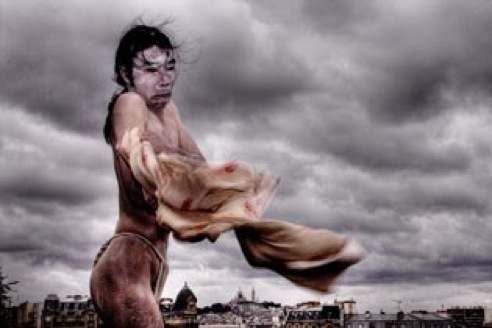
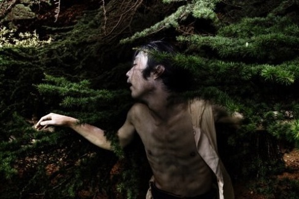

Takayuki. THE BUTOH DANCER


Działania / Aktualności
TAROT
Sztuka obrazu


107 Urodziny Hansa Bellmera w Katowicach
Zjazd Założycieli Buddyzmu w Polsce


HAPPENING - Króliki
Film z HALLOWEEN

Surrealizm Svankmajera
Piastowska w
Swiatowidzie

Psychodelia ‘60

Sylwester Bogów
(foto-relacja)
WYKŁADY
Andrzeja Urbanowicza


Albert Hofmann
i odkrycie LSD
ONEIRON - ezoteryczny krąg artystów


“Świat jest skandalem” - PREMIERA sztuki o Bellmerze w Teatrze Śląskim
Bill Karelis na Piastowskiej - Medytacja / Szambala

Spotkanie i wystawa: “Wokół Bellmera”
NOWOŚĆ !!!
KRÓLIKI NA ŚNIEŻCE



«Butoh, jest słowem przynależnym korzeniom tańca. Tańczenie butoh, jest prawdziwym eksperymentem sięgającym źródła, z którego Twój taniec pochodzi. W trakcie procesu docierania do niego, będziesz eksplorować całe swoje życie; życie, którym żyjesz prawdziwie, życie oddychające w Tobie. Będziesz na nowo dotykać otoczenie i smakować świat. I odnajdziesz ponownie kruchość własnej egzystencji w całkowitej harmonii ze wszystkim co istnieje. Tańczenie butoh jest właśnie tym procesem.»
(tekst nadesłany)
Rui Takayuki - tancerz butoh, choreograf. Urodzony w Kyoto, ( Japonia ) w 1976. W latach studenckich zajmował się teatrem i sztukami plastycznymi, aż zaczął tańczyć. Inspirując się tańcem Megumi Nakamura (balet klasyczny/współczesny), Min Tanaka (butoh), Kazuo Ohno (butoh), Simone Forti (postmodern) i wielu innych, rozwija swoje własne badania nad tańcem i ciałem. Równie ważnym elementem w jego pracy jest medytacja i Budoh Waraku (japońska sztuka walki ).